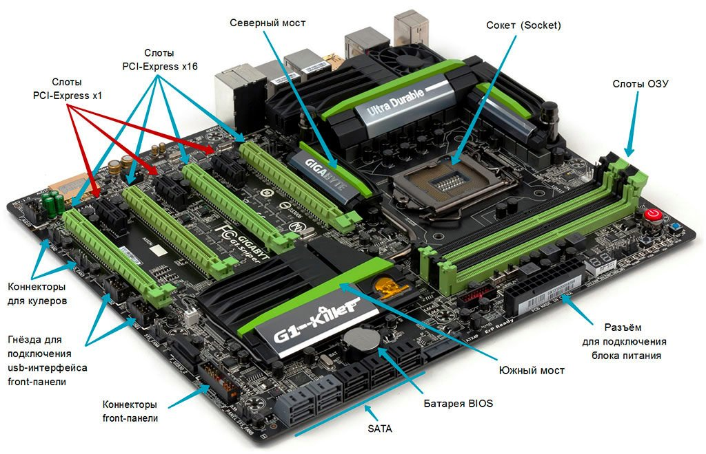

Материнская плата. Форм-факторы и компоненты. Характеристики выбора материнской платы
Материнская плата — центральный компонент компьютера, обеспечивающий соединение всех основных частей системы и их взаимодействие. При выборе материнской платы важно учитывать её форм-фактор, встроенные компоненты и характеристики, чтобы обеспечить совместимость с другими комплектующими и удовлетворить потребности пользователя.
Форм-факторы материнских плат
Форм-фактор материнской платы определяет её физические размеры, а также расположение монтажных отверстий и разъёмов, что влияет на выбор корпуса и на компоновку системы. Основные форм-факторы материнских плат:
- ATX: самый распространённый форм-фактор для настольных ПК, размером 305 × 244 мм. Обеспечивает достаточное количество слотов для расширения и хорошую компоновку разъёмов для игровых и мощных рабочих станций.
- Micro-ATX (mATX): уменьшенная версия ATX (244 × 244 мм), подходящая для средних и компактных систем. Обычно имеет меньше слотов расширения, но обеспечивает всё необходимое для домашних и офисных ПК.
- Mini-ITX: компактный форм-фактор (170 × 170 мм), предназначенный для небольших корпусов. Ограничено количеством слотов, но подходит для систем, где важны компактные размеры.
Основные компоненты материнской платы
Современные материнские платы включают множество компонентов и разъёмов для подключения всех ключевых устройств. Основные из них:
- Центральный разъём для процессора (Socket): разъём, в который устанавливается процессор. Тип сокета должен соответствовать конкретной модели процессора, например, LGA 1700 для Intel или AM5 для AMD.
- Слоты оперативной памяти (DIMM): слоты для установки модулей оперативной памяти. Количество и тип слотов (DDR4, DDR5) определяют максимальный объём и тип поддерживаемой ОЗУ.
- Чипсет: набор микросхем, управляющий взаимодействием между процессором, оперативной памятью и другими устройствами. Чипсет также определяет функции, доступные на плате (поддержка USB, PCIe и пр.).
- Слоты расширения PCIe: используются для подключения видеокарт, сетевых карт, звуковых карт и других устройств. Количество и версия PCIe (например, PCIe 4.0 или PCIe 5.0) влияют на возможности расширения системы.
- Разъёмы для накопителей: современные материнские платы поддерживают разъёмы SATA для HDD и SSD, а также M.2 для NVMe SSD, что обеспечивает высокую скорость передачи данных.
- Порты ввода-вывода: расположены на задней панели и включают USB, HDMI, аудиоразъёмы и сетевой порт. Их количество и типы зависят от модели платы.
Ключевые характеристики выбора материнской платы
При выборе материнской платы необходимо учитывать следующие характеристики:
- Совместимость с процессором: сокет и чипсет должны поддерживать выбранный процессор. Например, процессоры Intel и AMD требуют разные сокеты.
- Оперативная память: обратите внимание на количество слотов и поддерживаемый объём и тип памяти (DDR4 или DDR5), а также на максимальную частоту ОЗУ.
- Слоты расширения и возможности подключения: проверьте количество слотов PCIe для будущих обновлений и наличие необходимых разъёмов для хранения данных, таких как SATA и M.2.
- Поддержка периферийных устройств: оцените количество и типы USB-портов, сетевые возможности (LAN, Wi-Fi), аудиовыходы и другие порты ввода-вывода.
- Охлаждение и управление питанием: материнская плата должна иметь надёжную систему охлаждения для чипсета и VRM (модуля управления питанием), особенно в высокопроизводительных системах.
